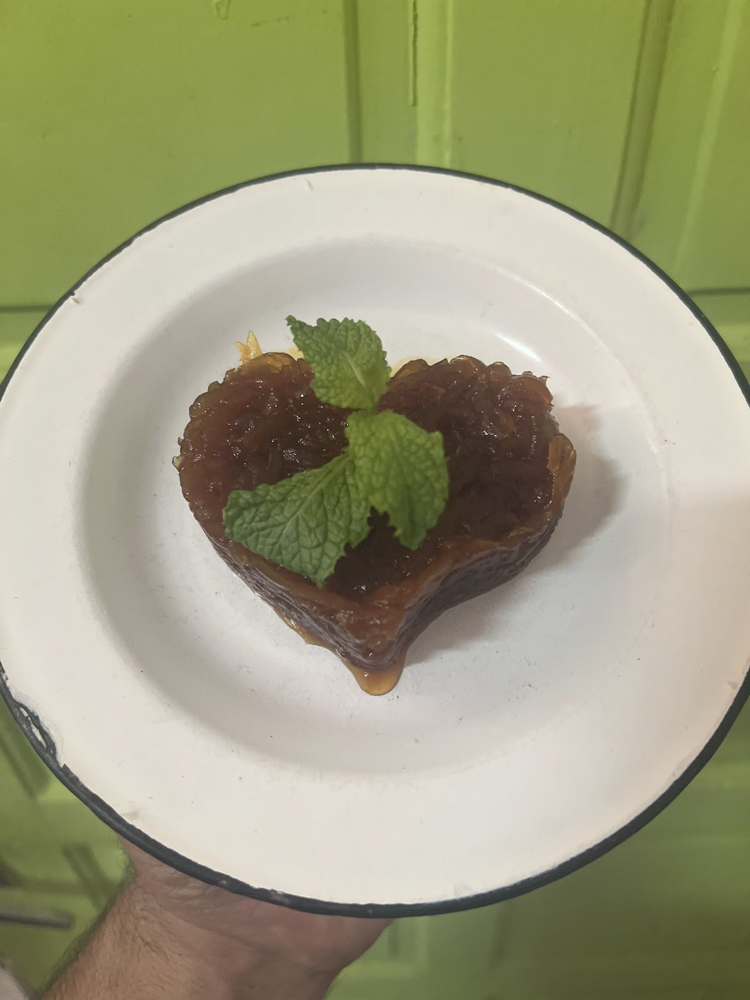
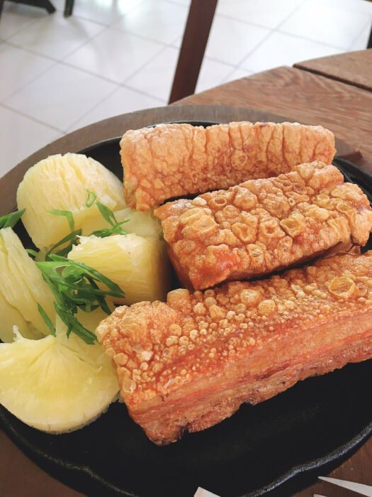

Início · A história
Do churrasquinho à casa de fachada laranja
“Somos um restaurante Comercial, Familiar e Informal.” A história contada pela própria casa, desde 2015.
A origem
“Nasceu da necessidade de sobrevivência”
“O Taiobha Culinária Mineira Artesanal nasceu da necessidade de sobrevivência.”“Quem somos”, site da casa
“Tivemos uma trajetória super eclética. Por força maior. Como vendas ambulantes de churrasquinhos; entregas de almoço à domicílio; formatos diferentes, e outros endereços. Trilhamos com muita garra (até hoje)…”“Quem somos”
Em julho de 2020, a casa contava cinco anos de existência: “nesse ano 2020 em julho fizemos (com muita fé) 5 (cinco) anos”.
De onde vem
Minas, São Paulo e o extremo sul da Bahia
“Somos do Estado de Minas – Belo Horizonte, São Paulo e Extremo Sul da Bahia.”“Quem somos”
“Trouxemos na nossa bagagem culinária de família, da fartura, da roça, de fogão à lenha, culinária caseira artesanal.”“Quem somos”

O porco
“Até então, não muito apreciada aqui”
“O nosso ingrediente principal a carne suína (até então, não muito apreciada aqui).”“Quem somos”
No cardápio de hoje, o “Corte Suíno Premium Vindo de MG” está no torresmo, na costelinha, no tutu, no pernil de oito horas de forno e na linguiça de pernil. A reportagem do site de Ronaldo Jacobina conta que o torresmo de barriga é “chamado com bom humor de ‘barrinha de cereal de mineiro’”.

A casa nova
Rua das Angélicas, 131
“No fim da via, uma casa de fachada laranja”Site de Ronaldo Jacobina
“Com cara de casa, o Taiobha aposta em uma atmosfera acolhedora desde a chegada”Site de Ronaldo Jacobina
Em 2025, a casa mudou de endereço dentro da Pituba, da Rua Sargento Astrolábio para a Rua das Angélicas. No salão, prateleiras laranja e azul com cachaças, toalhas de chita e a bandeira de Minas.
Quem recebe
Na cozinha e no salão
“A boa condução da cozinha é da chef Bhá, enquanto a torcedora voraz do Clube Atlético Mineiro, Coração acompanha de perto o salão e o serviço”Reportagem de Wendel de Novais no site de Ronaldo Jacobina
A casa se identifica no Google como “uma empresa de empreendedoras”, e assina no Instagram: “Comida Feita com Alma, Aconchego de Coração”.
Dúvidas frequentes
Perguntas comuns
Desde quando a casa existe?
Pelo “Quem somos” do site da casa, desde julho de 2015, na Pituba.
Por que “Taiobha”?
Segundo a reportagem do site de Ronaldo Jacobina, o nome homenageia a cozinheira chef da casa e a taioba, planta muito consumida em Minas.
Uai, sô
A mesa posta fica na Rua das Angélicas.
Almoço de quarta a domingo, na casa de fachada laranja da Pituba. Avise que vem pelo WhatsApp e a casa responde.